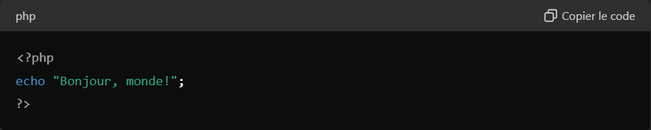
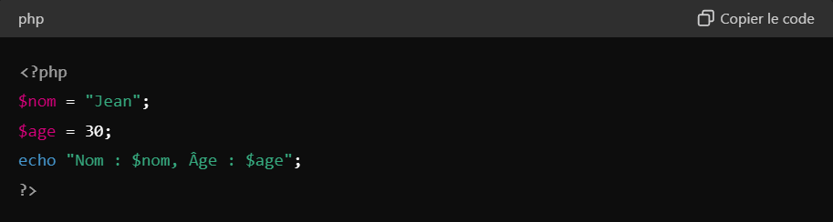
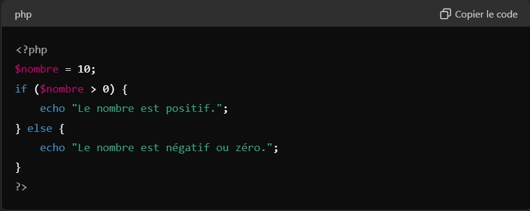
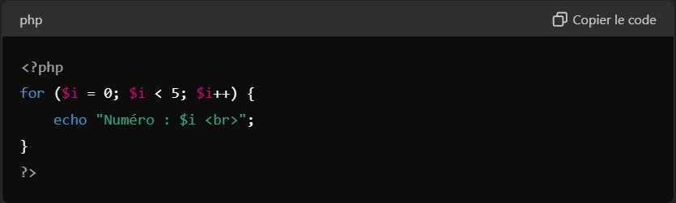
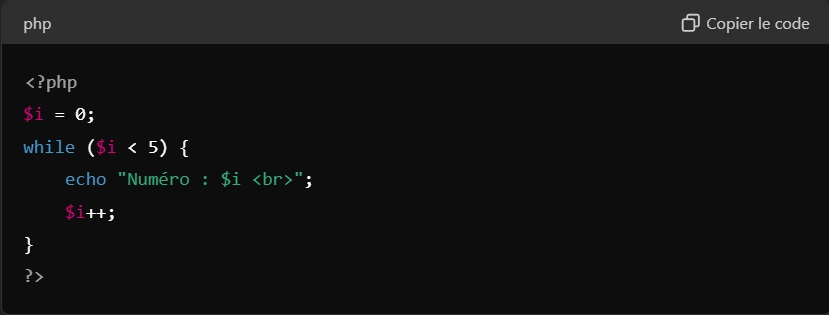
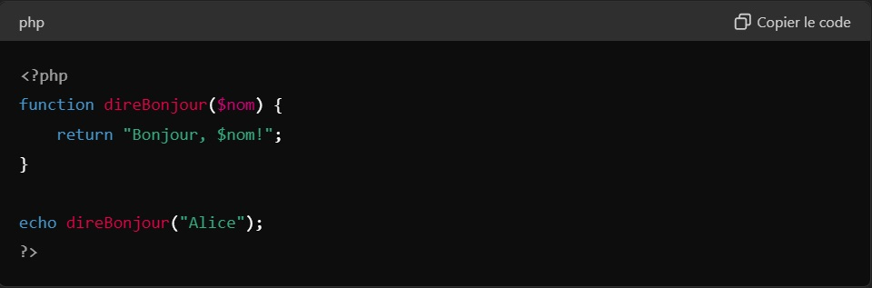
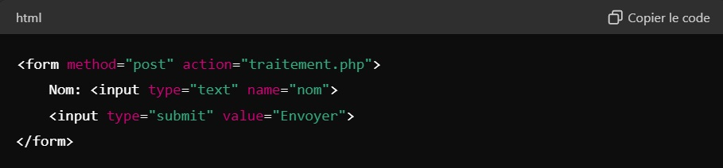
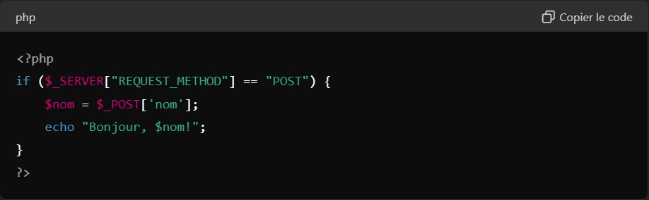
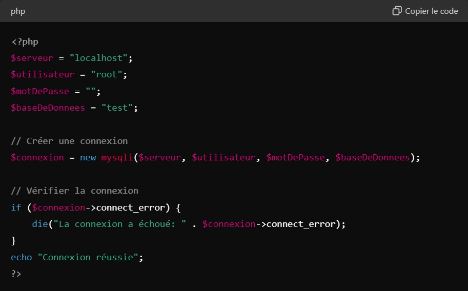
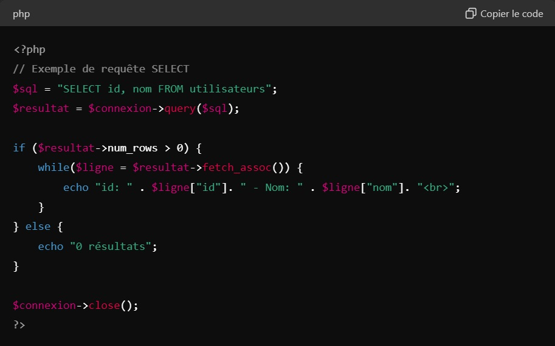

PHP
PHP est un langage de script côté serveur conçu pour le développement web mais également utilisé comme langage de programmation généraliste. Créée à l'origine par Rasmus Lerdorf en 1994, l'implémentation de la référence PHP est maintenant produite par The PHP Group. PHP signifiait à l'origine Personal Home Page, mais elle correspond maintenant à l'acronyme récursif PHP : Hypertext Preprocessor.
Installation de PHP
Pour exécuter PHP sur votre ordinateur, vous pouvez installer un serveur local comme XAMPP ou MAMP, qui inclut PHP, Apache (serveur web), et MySQL (base de données).
Premier Script PHP
Création d'un Fichier PHP :
Créez un fichier avec l'extension .php (par exemple, index.php).
Code PHP de Base

Ce code utilise la fonction echo pour afficher du texte.
Syntaxe de Base
Variables :

Les variables en PHP commencent par le symbole $.
Structures de Contrôle
If-Else :

Boucles :
For :

While :

Fonctions
Les fonctions permettent de regrouper du code réutilisable.

Manipulation de Formulaires
Formulaire HTML :

Traitement en PHP (fichier traitement.php) :

Connexion à une Base de Données MySQL
Connexion :

Requêtes SQL :

Conclusion
Ce cours court vous donne un aperçu des bases de PHP. Pour aller plus loin, explorez la documentation officielle de PHP (https://www.php.net/docs.php) et essayez de construire des projets simples pour pratiquer.